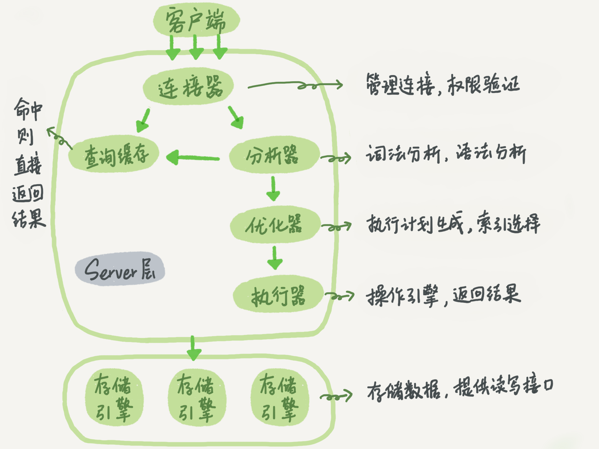
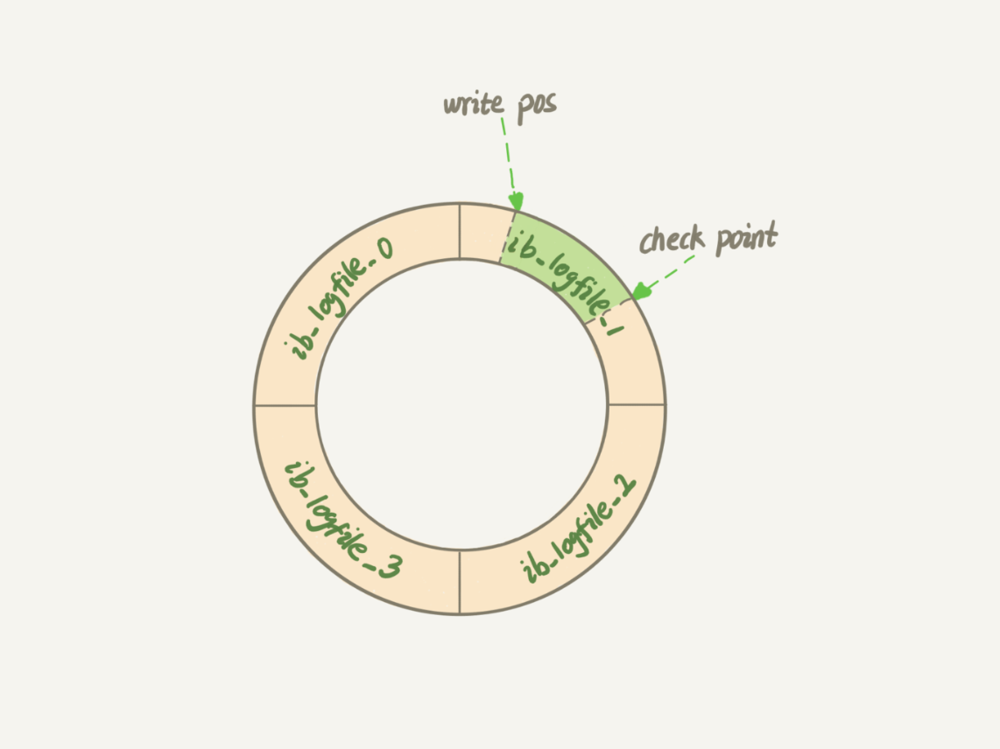

<!DOCTYPE html>
<html>
<head><meta name="generator" content="Hexo 3.9.0">
  <meta charset="utf-8">
  
  <title>02 | 日志系统：一条SQL更新语句是如何执行的 | Hexo</title>
  <meta name="viewport" content="width=device-width, initial-scale=1, maximum-scale=1">
  <meta name="description" content="日志前面我们系统了解了一个查询语句的执行流程，并介绍了执行过程中涉及的处理模块。相信你还记得，一条查询语句的执行过程一般是经过连接器、分析器、优化器、执行器等功能模块，最后到达存储引擎。 那么，一条更新语句的执行流程又是怎样的呢？之前你可能经常听 DBA 同事说，MySQL 可以恢复到半个月内任意一秒的状态，惊叹的同时，你是不是心中也会不免会好奇，这是怎样做到的呢？ 我们还是从一个表的一条更新语句">
<meta name="keywords" content="MySQL,MySQL实战45讲">
<meta property="og:type" content="article">
<meta property="og:title" content="02 | 日志系统：一条SQL更新语句是如何执行的">
<meta property="og:url" content="https://gumihoy.github.io/2019/06/03/02-MySQL实战45讲-日志系统：一条SQL更新语句是如何执行的/index.html">
<meta property="og:site_name" content="Hexo">
<meta property="og:description" content="日志前面我们系统了解了一个查询语句的执行流程，并介绍了执行过程中涉及的处理模块。相信你还记得，一条查询语句的执行过程一般是经过连接器、分析器、优化器、执行器等功能模块，最后到达存储引擎。 那么，一条更新语句的执行流程又是怎样的呢？之前你可能经常听 DBA 同事说，MySQL 可以恢复到半个月内任意一秒的状态，惊叹的同时，你是不是心中也会不免会好奇，这是怎样做到的呢？ 我们还是从一个表的一条更新语句">
<meta property="og:locale" content="default">
<meta property="og:image" content="https://gumihoy.github.io/2019/06/03/02-MySQL实战45讲-日志系统：一条SQL更新语句是如何执行的/0d2070e8f84c4801adbfa03bda1f98d9.png">
<meta property="og:image" content="https://gumihoy.github.io/2019/06/03/02-MySQL实战45讲-日志系统：一条SQL更新语句是如何执行的/16a7950217b3f0f4ed02db5db59562a7.png">
<meta property="og:updated_time" content="2019-11-02T07:12:18.083Z">
<meta name="twitter:card" content="summary">
<meta name="twitter:title" content="02 | 日志系统：一条SQL更新语句是如何执行的">
<meta name="twitter:description" content="日志前面我们系统了解了一个查询语句的执行流程，并介绍了执行过程中涉及的处理模块。相信你还记得，一条查询语句的执行过程一般是经过连接器、分析器、优化器、执行器等功能模块，最后到达存储引擎。 那么，一条更新语句的执行流程又是怎样的呢？之前你可能经常听 DBA 同事说，MySQL 可以恢复到半个月内任意一秒的状态，惊叹的同时，你是不是心中也会不免会好奇，这是怎样做到的呢？ 我们还是从一个表的一条更新语句">
<meta name="twitter:image" content="https://gumihoy.github.io/2019/06/03/02-MySQL实战45讲-日志系统：一条SQL更新语句是如何执行的/0d2070e8f84c4801adbfa03bda1f98d9.png">
  
    <link rel="alternative" href="/atom.xml" title="Hexo" type="application/atom+xml">
  
  
    <link rel="icon" href="/img/favicon.png">
  
  
  <link rel="stylesheet" href="/css/style.css">
  <link rel="stylesheet" href="/font-awesome/css/font-awesome.min.css">
  <link rel="apple-touch-icon" href="/apple-touch-icon.png">
  
  
      <link rel="stylesheet" href="/fancybox/jquery.fancybox.css">
  
  <!-- 加载特效 -->
    <script src="/js/pace.js"></script>
    <link href="/css/pace/pace-theme-flash.css" rel="stylesheet">
  <script>
      var yiliaConfig = {
          rootUrl: '/',
          fancybox: true,
          animate: false,
          isHome: false,
          isPost: true,
          isArchive: false,
          isTag: false,
          isCategory: false,
          open_in_new: false
      }
  </script>
</head></html>
<body>
  <div id="container">
    <div class="left-col">
    <div class="overlay"></div>
<div class="intrude-less">
    <header id="header" class="inner">
        <a href="/" class="profilepic">
            
            
            
        </a>

        <hgroup>
          <h1 class="header-author"><a href="/" title="Hi Mate">Gumihoy</a></h1>
        </hgroup>

        
        
        
            <div id="switch-btn" class="switch-btn">
                <div class="icon">
                    <div class="icon-ctn">
                        <div class="icon-wrap icon-house" data-idx="0">
                            <div class="birdhouse"></div>
                            <div class="birdhouse_holes"></div>
                        </div>
                        <div class="icon-wrap icon-ribbon hide" data-idx="1">
                            <div class="ribbon"></div>
                        </div>
                        
                        
                        <div class="icon-wrap icon-me hide" data-idx="3">
                            <div class="user"></div>
                            <div class="shoulder"></div>
                        </div>
                        
                    </div>
                    
                </div>
                <div class="tips-box hide">
                    <div class="tips-arrow"></div>
                    <ul class="tips-inner">
                        <li>菜单</li>
                        <li>标签</li>
                        
                        
                        <li>关于我</li>
                        
                    </ul>
                </div>
            </div>
        

        <div id="switch-area" class="switch-area">
            <div class="switch-wrap">
                <section class="switch-part switch-part1">
                    <nav class="header-menu">
                        <ul>
                        
                            <li><a href="/">首页</a></li>
                        
                            <li><a href="/archives">全部文章</a></li>
                        
                            <li><a href="/categories">分类</a></li>
                        
                            <li><a href="/tags">标签</a></li>
                        
                            <li><a href="/about">关于</a></li>
                        
                        </ul>
                    </nav>
                    <nav class="header-nav">
                        <ul class="social">
                            
                                <a class="fl github" target="_blank" href="https://github.com/gumihoy" title="github">github</a>
                            
                        </ul>
                    </nav>
                </section>
                
                
                <section class="switch-part switch-part2">
                    <div class="widget tagcloud" id="js-tagcloud">
                        <a href="/tags/Algorithm/" style="font-size: 10px;">Algorithm</a> <a href="/tags/Elasticsearch/" style="font-size: 11px;">Elasticsearch</a> <a href="/tags/Git/" style="font-size: 10px;">Git</a> <a href="/tags/Hash/" style="font-size: 10px;">Hash</a> <a href="/tags/Hexo/" style="font-size: 10px;">Hexo</a> <a href="/tags/Homebrew/" style="font-size: 10px;">Homebrew</a> <a href="/tags/Iterm2/" style="font-size: 10px;">Iterm2</a> <a href="/tags/Java/" style="font-size: 14px;">Java</a> <a href="/tags/JavaAgent/" style="font-size: 10px;">JavaAgent</a> <a href="/tags/KNN/" style="font-size: 10px;">KNN</a> <a href="/tags/Kafka/" style="font-size: 10px;">Kafka</a> <a href="/tags/LaTeX/" style="font-size: 10px;">LaTeX</a> <a href="/tags/Mac/" style="font-size: 12px;">Mac</a> <a href="/tags/Markdown/" style="font-size: 10px;">Markdown</a> <a href="/tags/MySQL/" style="font-size: 18px;">MySQL</a> <a href="/tags/MySQL实战45讲/" style="font-size: 17px;">MySQL实战45讲</a> <a href="/tags/NoSQL/" style="font-size: 14px;">NoSQL</a> <a href="/tags/PyTorch/" style="font-size: 10px;">PyTorch</a> <a href="/tags/Python/" style="font-size: 10px;">Python</a> <a href="/tags/RPC/" style="font-size: 10px;">RPC</a> <a href="/tags/Redis/" style="font-size: 14px;">Redis</a> <a href="/tags/SQL/" style="font-size: 11px;">SQL</a> <a href="/tags/SQL转换/" style="font-size: 12px;">SQL转换</a> <a href="/tags/SVM/" style="font-size: 10px;">SVM</a> <a href="/tags/Slow/" style="font-size: 10px;">Slow</a> <a href="/tags/SpringBoot/" style="font-size: 11px;">SpringBoot</a> <a href="/tags/Tensorflow/" style="font-size: 10px;">Tensorflow</a> <a href="/tags/Thrift/" style="font-size: 10px;">Thrift</a> <a href="/tags/Tomcat/" style="font-size: 10px;">Tomcat</a> <a href="/tags/Trace/" style="font-size: 10px;">Trace</a> <a href="/tags/ZooKeeper/" style="font-size: 10px;">ZooKeeper</a> <a href="/tags/中文分词/" style="font-size: 10px;">中文分词</a> <a href="/tags/人工智能/" style="font-size: 14px;">人工智能</a> <a href="/tags/信息熵/" style="font-size: 12px;">信息熵</a> <a href="/tags/信息论/" style="font-size: 12px;">信息论</a> <a href="/tags/全文搜索/" style="font-size: 11px;">全文搜索</a> <a href="/tags/公式/" style="font-size: 10px;">公式</a> <a href="/tags/决策树/" style="font-size: 12px;">决策树</a> <a href="/tags/前馈神经网络/" style="font-size: 10px;">前馈神经网络</a> <a href="/tags/卷积神经网络/" style="font-size: 10px;">卷积神经网络</a> <a href="/tags/微积分/" style="font-size: 11px;">微积分</a> <a href="/tags/排序/" style="font-size: 10px;">排序</a> <a href="/tags/数学/" style="font-size: 16px;">数学</a> <a href="/tags/方差/" style="font-size: 12px;">方差</a> <a href="/tags/期望/" style="font-size: 10px;">期望</a> <a href="/tags/机器学习/" style="font-size: 20px;">机器学习</a> <a href="/tags/极限/" style="font-size: 11px;">极限</a> <a href="/tags/概率与统计/" style="font-size: 13px;">概率与统计</a> <a href="/tags/消息队列/" style="font-size: 10px;">消息队列</a> <a href="/tags/深度学习/" style="font-size: 12px;">深度学习</a> <a href="/tags/深度学习框架/" style="font-size: 11px;">深度学习框架</a> <a href="/tags/监督学习/" style="font-size: 15px;">监督学习</a> <a href="/tags/神经网络/" style="font-size: 13px;">神经网络</a> <a href="/tags/算法/" style="font-size: 19px;">算法</a> <a href="/tags/编译原理/" style="font-size: 10px;">编译原理</a> <a href="/tags/编译器/" style="font-size: 10px;">编译器</a> <a href="/tags/自然语言处理/" style="font-size: 10px;">自然语言处理</a> <a href="/tags/解释器/" style="font-size: 10px;">解释器</a> <a href="/tags/设计模式/" style="font-size: 10px;">设计模式</a> <a href="/tags/词法分析/" style="font-size: 10px;">词法分析</a> <a href="/tags/贝叶斯/" style="font-size: 12px;">贝叶斯</a> <a href="/tags/负载均衡/" style="font-size: 10px;">负载均衡</a> <a href="/tags/高等数学/" style="font-size: 11px;">高等数学</a>
                    </div>
                </section>
                
                
                

                
                
                <section class="switch-part switch-part3">
                
                    <div id="js-aboutme">纯海迷、爱运动、爱交友、爱旅行、喜欢接触新鲜事物、迎接新的挑战，更爱游离于错综复杂的编码与逻辑中</div>
                </section>
                
            </div>
        </div>
    </header>                
</div>
    </div>
    <div class="mid-col">
      <nav id="mobile-nav">
      <div class="overlay">
          <div class="slider-trigger"></div>
          <h1 class="header-author js-mobile-header hide"><a href="/" title="Me">Gumihoy</a></h1>
      </div>
    <div class="intrude-less">
        <header id="header" class="inner">
            <a href="/" class="profilepic">
                
                    
                
            </a>
            <hgroup>
              <h1 class="header-author"><a href="/" title="Me">Gumihoy</a></h1>
            </hgroup>
            
            <nav class="header-menu">
                <ul>
                
                    <li><a href="/">首页</a></li>
                
                    <li><a href="/archives">全部文章</a></li>
                
                    <li><a href="/categories">分类</a></li>
                
                    <li><a href="/tags">标签</a></li>
                
                    <li><a href="/about">关于</a></li>
                
                <div class="clearfix"></div>
                </ul>
            </nav>
            <nav class="header-nav">
                <div class="social">
                    
                        <a class="github" target="_blank" href="https://github.com/gumihoy" title="github">github</a>
                    
                </div>
            </nav>
        </header>                
    </div>
</nav>
      <div class="body-wrap"><article id="post-02-MySQL实战45讲-日志系统：一条SQL更新语句是如何执行的" class="article article-type-post" itemscope itemprop="blogPost">
  
    <div class="article-meta">
      <a href="/2019/06/03/02-MySQL实战45讲-日志系统：一条SQL更新语句是如何执行的/" class="article-date">
      <time datetime="2019-06-02T16:00:00.000Z" itemprop="datePublished">2019-06-03</time>
</a>
    </div>
  
  <div class="article-inner">
    
      <input type="hidden" class="isFancy" />
    
    
      <header class="article-header">
        
  
    <h1 class="article-title" itemprop="name">
      02 | 日志系统：一条SQL更新语句是如何执行的
    </h1>
  

      </header>
      
      <div class="article-info article-info-post">
        
    <div class="article-category tagcloud">
	    <a class="article-category-link" href="/categories/MySQL/">MySQL</a>
    </div>


        
    <div class="article-tag tagcloud">
        <ul class="article-tag-list"><li class="article-tag-list-item"><a class="article-tag-list-link" href="/tags/MySQL/">MySQL</a></li><li class="article-tag-list-item"><a class="article-tag-list-link" href="/tags/MySQL实战45讲/">MySQL实战45讲</a></li></ul>
    </div>

        <div class="clearfix"></div>
      </div>
      
    
    <div class="article-entry" itemprop="articleBody">
      
          
        <h2 id="日志"><a href="#日志" class="headerlink" title="日志"></a>日志</h2><p>前面我们系统了解了一个查询语句的执行流程，并介绍了执行过程中涉及的处理模块。相信你还记得，一条查询语句的执行过程一般是经过连接器、分析器、优化器、执行器等功能模块，最后到达存储引擎。</p>
<p>那么，一条更新语句的执行流程又是怎样的呢？之前你可能经常听 DBA 同事说，MySQL 可以恢复到半个月内任意一秒的状态，惊叹的同时，你是不是心中也会不免会好奇，这是怎样做到的呢？</p>
<p>我们还是从一个表的一条更新语句说起，下面是这个表的创建语句，这个表有一个主键 <code>ID</code> 和一个整型字段 <code>c</code>：</p>
<figure class="highlight plain"><table><tr><td class="gutter"><pre><span class="line">1</span><br></pre></td><td class="code"><pre><span class="line">mysql&gt; create table T(ID int primary key, c int);</span><br></pre></td></tr></table></figure>
<a id="more"></a>
<p>如果要将 <code>ID=2</code> 这一行的值加 1，SQL 语句就会这么写：
<figure class="highlight plain"><table><tr><td class="gutter"><pre><span class="line">1</span><br></pre></td><td class="code"><pre><span class="line">mysql&gt; update T set c=c+1 where ID=2;</span><br></pre></td></tr></table></figure></p>
<p>前面我有跟你介绍过 SQL 语句基本的执行链路，这里我再把那张图拿过来，你也可以先简单看看这个图回顾下。首先，可以确定的说，查询语句的那一套流程，更新语句也是同样会走一遍。</p>
<p></p>
<p>你执行语句前要先连接数据库，这是连接器的工作。</p>
<p>前面我们说过，在一个表上有更新的时候，跟这个表有关的查询缓存会失效，所以这条语句就会把表 T 上所有缓存结果都清空。这也就是我们一般不建议使用查询缓存的原因。</p>
<p>接下来，分析器会通过词法和语法解析知道这是一条更新语句。优化器决定要使用 ID 这个索引。然后，执行器负责具体执行，找到这一行，然后更新。</p>
<p>与查询流程不一样的是，更新流程还涉及两个重要的日志模块，它们正是我们今天要讨论的主角：redo log（重做日志）和 binlog（归档日志）。如果接触 MySQL，那这两个词肯定是绕不过的，我后面的内容里也会不断地和你强调。不过话说回来，redo log 和 binlog 在设计上有很多有意思的地方，这些设计思路也可以用到你自己的程序里。</p>
<h2 id="日志-1"><a href="#日志-1" class="headerlink" title="日志"></a>日志</h2><h3 id="重要的日志模块：redo-log"><a href="#重要的日志模块：redo-log" class="headerlink" title="重要的日志模块：redo log"></a>重要的日志模块：redo log</h3><p>不知道你还记不记得《孔乙己》这篇文章，酒店掌柜有一个粉板，专门用来记录客人的赊账记录。如果赊账的人不多，那么他可以把顾客名和账目写在板上。但如果赊账的人多了，粉板总会有记不下的时候，这个时候掌柜一定还有一个专门记录赊账的账本。</p>
<p>如果有人要赊账或者还账的话，掌柜一般有两种做法：</p>
<ul>
<li>直接把账本翻出来，把这次赊的账加上去或者扣除掉；</li>
<li>先在粉板上记下这次的账，等打烊以后再把账本翻出来核算；</li>
</ul>
<p>在生意红火柜台很忙时，掌柜一定会选择后者，因为前者操作实在是太麻烦了。首先，你得找到这个人的赊账总额那条记录。你想想，密密麻麻几十页，掌柜要找到那个名字，可能还得带上老花镜慢慢找，找到之后再拿出算盘计算，最后再将结果写回到账本上。</p>
<p>这整个过程想想都麻烦。相比之下，还是先在粉板上记一下方便。你想想，如果掌柜没有粉板的帮助，每次记账都得翻账本，效率是不是低得让人难以忍受？</p>
<p>同样，在 MySQL 里也有这个问题，如果每一次的更新操作都需要写进磁盘，然后磁盘也要找到对应的那条记录，然后再更新，整个过程 IO 成本、查找成本都很高。为了解决这个问题，MySQL 的设计者就用了类似酒店掌柜粉板的思路来提升更新效率。</p>
<p>而粉板和账本配合的整个过程，其实就是 MySQL 里经常说到的 <code>WAL</code> 技术，<code>WAL</code> 的全称是 <code>Write-Ahead Logging</code>，它的关键点就是先写日志，再写磁盘，也就是先写粉板，等不忙的时候再写账本。</p>
<p>具体来说，当有一条记录需要更新的时候，InnoDB 引擎就会先把记录写到 <code>redo log</code>（粉板）里面，并更新内存，这个时候更新就算完成了。同时，InnoDB 引擎会在适当的时候，将这个操作记录更新到磁盘里面，而这个更新往往是在系统比较空闲的时候做，这就像打烊以后掌柜做的事。</p>
<p>如果今天赊账的不多，掌柜可以等打烊后再整理。但如果某天赊账的特别多，粉板写满了，又怎么办呢？这个时候掌柜只好放下手中的活儿，把粉板中的一部分赊账记录更新到账本中，然后把这些记录从粉板上擦掉，为记新账腾出空间。</p>
<p>与此类似，InnoDB 的 redo log 是固定大小的，比如可以配置为一组 4 个文件（innodb_log_files_in_group＝4，innodb_log_file_size＝4294967296），每个文件的大小是 1GB，那么这块“粉板”总共就可以记录 4GB 的操作。从头开始写，写到末尾就又回到开头循环写，如下面这个图所示。</p>
<p></p>
<p><code>write pos</code> 是当前记录的位置，一边写一边后移，写到第 3 号文件末尾后就回到 0 号文件开头。
<code>checkpoint</code> 是当前要擦除的位置，也是往后推移并且循环的，擦除记录前要把记录更新到数据文件。</p>
<p><code>write pos</code> 和 <code>checkpoint</code> 之间的是”粉板”上还空着的部分，可以用来记录新的操作。如果 <code>write pos</code> 追上 <code>checkpoint</code>，表示“粉板”满了，这时候不能再执行新的更新，得停下来先擦掉一些记录，把 <code>checkpoint</code> 推进一下。</p>
<p>有了 redo log，InnoDB 就可以保证即使数据库发生异常重启，之前提交的记录都不会丢失，这个能力称为<code>crash-safe</code>。</p>
<p>要理解 <code>crash-safe</code> 这个概念，可以想想我们前面赊账记录的例子。只要赊账记录记在了粉板上或写在了账本上，之后即使掌柜忘记了，比如突然停业几天，恢复生意后依然可以通过账本和粉板上的数据明确赊账账目。</p>
<p><br></p>
<h3 id="重要的日志模块：binlog"><a href="#重要的日志模块：binlog" class="headerlink" title="重要的日志模块：binlog"></a>重要的日志模块：binlog</h3><p>前面我们讲过，MySQL 整体来看，其实就有两块：一块是 Server 层，它主要做的是 MySQL 功能层面的事情；还有一块是引擎层，负责存储相关的具体事宜。上面我们聊到的粉板 redo log 是 InnoDB 引擎特有的日志，而 Server 层也有自己的日志，称为 binlog（归档日志）。</p>
<p>我想你肯定会问，为什么会有两份日志呢？</p>
<p>因为最开始 MySQL 里并没有 InnoDB 引擎。MySQL 自带的引擎是 MyISAM，但是 MyISAM 没有 crash-safe 的能力，binlog 日志只能用于归档。而 InnoDB 是另一个公司以插件形式引入 MySQL 的，既然只依靠 binlog 是没有 crash-safe 能力的，所以 InnoDB 使用另外一套日志系统——也就是 redo log 来实现 crash-safe 能力。</p>
<p>这两种日志有以下三点不同:</p>
<ol>
<li><code>redo log</code> 是 <code>InnoDB</code> 引擎特有的；<code>binlog</code> 是 <code>MySQL Server</code>层实现的，所有引擎都可以使用</li>
<li><code>redo log</code> 是物理日志，记录的是“在某个数据页上做了什么修改”；binlog 是逻辑日志，记录的是这个语句的原始逻辑，比如”给 <code>ID=2</code> 这一行的 <code>c</code> 字段加 1”</li>
<li><code>redo log</code> 是循环写的，空间固定会用完；<code>binlog</code> 是可以追加写入的。“追加写”是指 <code>binlog</code> 文件写到一定大小后会切换到下一个，并不会覆盖以前的日志。</li>
</ol>
<p>有了对这两个日志的概念性理解，我们再来看执行器和 InnoDB 引擎在执行这个简单的 update 语句时的内部流程。</p>
<p>执行器先找引擎取 ID=2 这一行。ID 是主键，引擎直接用树搜索找到这一行。如果 ID=2 这一行所在的数据页本来就在内存中，就直接返回给执行器；否则，需要先从磁盘读入内存，然后再返回。</p>
<p>执行器拿到引擎给的行数据，把这个值加上 1，比如原来是 N，现在就是 N+1，得到新的一行数据；</p>
<p>执行器调用引擎接口写入这行新数据；</p>
<p>引擎将这行新数据更新到内存中，同时将这个更新操作记录到 redo log 里面，此时 redo log 处于 prepare 状态；</p>
<p>引擎告知执行器执行完成了，随时可以提交事务；</p>
<p>执行器生成这个操作的 binlog，并把 binlog 写入磁盘；</p>
<p>执行器调用引擎的提交事务接口，引擎把刚刚写入的 redo log 改成提交（commit）状态，更新完成；</p>
<p>这里我给出这个 update 语句的执行流程图，图中浅色框表示是在 InnoDB 内部执行的，深色框表示是在执行器中执行的。</p>
<p>update 语句执行流程</p>
<p>你可能注意到了，最后三步看上去有点“绕”，将 redo log 的写入拆成了两个步骤：prepare 和 commit，这就是”两阶段提交”。</p>
<p><br></p>
<h3 id="两阶段提交"><a href="#两阶段提交" class="headerlink" title="两阶段提交"></a>两阶段提交</h3><p>为什么必须有“两阶段提交”呢？这是为了让两份日志之间的逻辑一致。要说明这个问题，我们得从文章开头的那个问题说起：怎样让数据库恢复到半个月内任意一秒的状态？</p>
<p>前面我们说过了，<code>binlog</code> 会记录所有的逻辑操作，并且是采用<code>追加写</code>的形式。如果你的 DBA 承诺说半个月内可以恢复，那么备份系统中一定会保存最近半个月的所有 binlog，同时系统会定期做整库备份。这里的“定期”取决于系统的重要性，可以是一天一备，也可以是一周一备。</p>
<p>当需要恢复到指定的某一秒时，比如某天下午两点发现中午十二点有一次误删表，需要找回数据，那你可以这么做：</p>
<p>首先，找到最近的一次全量备份，如果你运气好，可能就是昨天晚上的一个备份，从这个备份恢复到临时库；</p>
<p>然后，从备份的时间点开始，将备份的 binlog 依次取出来，重放到中午误删表之前的那个时刻。</p>
<p>这样你的临时库就跟误删之前的线上库一样了，然后你可以把表数据从临时库取出来，按需要恢复到线上库去。</p>
<p>好了，说完了数据恢复过程，我们回来说说，为什么日志需要<code>两阶段提交</code>。这里不妨用反证法来进行解释。</p>
<p>由于 <code>redo log</code> 和 <code>binlog</code> 是两个独立的逻辑，如果不用两阶段提交，要么就是先写完 redo log 再写 binlog，或者采用反过来的顺序。我们看看这两种方式会有什么问题。</p>
<p>仍然用前面的 update 语句来做例子。假设当前 ID=2 的行，字段 c 的值是 0，再假设执行 update 语句过程中在写完第一个日志后，第二个日志还没有写完期间发生了 crash，会出现什么情况呢？</p>
<ol>
<li><p>先写 <code>redo log</code> 后写 <code>binlog</code>。假设在 <code>redo log</code> 写完，<code>binlog</code> 还没有写完的时候，MySQL 进程异常重启。由于我们前面说过的，redo log 写完之后，系统即使崩溃，仍然能够把数据恢复回来，所以恢复后这一行 c 的值是 1。
但是由于 <code>binlog</code> 没写完就 crash 了，这时候 binlog 里面就没有记录这个语句。因此，之后备份日志的时候，存起来的 binlog 里面就没有这条语句。然后你会发现，如果需要用这个 binlog 来恢复临时库的话，由于这个语句的 binlog 丢失，这个临时库就会少了这一次更新，恢复出来的这一行 c 的值就是 0，与原库的值不同。</p>
</li>
<li><p>先写 <code>binlog</code> 后写 <code>redo log</code>。如果在 binlog 写完之后 crash，由于 redo log 还没写，崩溃恢复以后这个事务无效，所以这一行 c 的值是 0。但是 binlog 里面已经记录了“把 c 从 0 改成 1”这个日志。所以，在之后用 binlog 来恢复的时候就多了一个事务出来，恢复出来的这一行 c 的值就是 1，与原库的值不同。</p>
</li>
</ol>
<p>可以看到，如果不使用“两阶段提交”，那么数据库的状态就有可能和用它的日志恢复出来的库的状态不一致。</p>
<p>你可能会说，这个概率是不是很低，平时也没有什么动不动就需要恢复临时库的场景呀？</p>
<p>其实不是的，不只是误操作后需要用这个过程来恢复数据。当你需要扩容的时候，也就是需要再多搭建一些备库来增加系统的读能力的时候，现在常见的做法也是用全量备份加上应用 binlog 来实现的，这个“不一致”就会导致你的线上出现主从数据库不一致的情况。</p>
<p>简单说，redo log 和 binlog 都可以用于表示事务的提交状态，而两阶段提交就是让这两个状态保持逻辑上的一致。</p>
<p>小结</p>
<p>今天，我介绍了 MySQL 里面最重要的两个日志，即物理日志 redo log 和逻辑日志 binlog。</p>
<p>redo log 用于保证 crash-safe 能力。innodb_flush_log_at_trx_commit 这个参数设置成 1 的时候，表示每次事务的 redo log 都直接持久化到磁盘。这个参数我建议你设置成 1，这样可以保证 MySQL 异常重启之后数据不丢失。</p>
<p>sync_binlog 这个参数设置成 1 的时候，表示每次事务的 binlog 都持久化到磁盘。这个参数我也建议你设置成 1，这样可以保证 MySQL 异常重启之后 binlog 不丢失。</p>
<p>我还跟你介绍了与 MySQL 日志系统密切相关的“两阶段提交”。两阶段提交是跨系统维持数据逻辑一致性时常用的一个方案，即使你不做数据库内核开发，日常开发中也有可能会用到。</p>
<p>文章的最后，我给你留一个思考题吧。前面我说到定期全量备份的周期“取决于系统重要性，有的是一天一备，有的是一周一备”。那么在什么场景下，一天一备会比一周一备更有优势呢？或者说，它影响了这个数据库系统的哪个指标？</p>
<p>备份时间周期的长短，理解需要考虑</p>
<p>业务实际的数据存量，如果大到一天没有办法备份完成，只能一周一次，甚至更长</p>
<p>业务数据的增量，如果增量非常大，如果一周备份一次，增量备份的考验会比较大，极大的概率会出现增量备份失败问题，另外恢复时长和成功率也比较困难</p>
<p>业务比较重要并且对恢复时间的忍受程度低，并且历史上多次出现类似数据回滚的需求，而且增量还不小优先一天一备份，相反业务实际不重要，出问题后可以容忍一定的不可用，而且增量还不多，出于成本考虑可以用一周一备份</p>
<p>备份文件的恢复效率很高的话，大多业务增量一周的恢复时长还是可以保证的，这时候就是提供SLA让业务决策了</p>
<p>综合数据存量、增量、备份成本、恢复效率、业务SLA选择，我理解就有答案了！</p>
<p>精彩评语：</p>
<p>两阶段提交遇到Mysqld crash</p>
<ol>
<li>prepare阶段 </li>
<li>写binlog </li>
<li>commit</li>
</ol>
<p>当在2之前崩溃时
重启恢复：后发现没有commit，回滚。
备份恢复：没有binlog
当在3之前崩溃
重启恢复：虽没有commit，但满足prepare和binlog完整，所以重启后会自动commit。
备份：有binlog.</p>
<p>知识点</p>
<p>redo是物理的，binlog是逻辑的；现在由于redo是属于InnoDB引擎，所以必须要有binlog，因为你可以使用别的引擎</p>
<p>保证数据库的一致性，必须要保证2份日志一致，使用的2阶段式提交；其实感觉像事务，不是成功就是失败，不能让中间环节出现，也就是一个成功，一个失败</p>
<p>如果有一天mysql只有InnoDB引擎了，有redo来实现复制，那么感觉oracle的DG就诞生了，物理的速度也将远超逻辑的，毕竟只记录了改动向量</p>
<p>binlog几大模式，一般采用row，因为遇到时间，从库可能会出现不一致的情况，但是row更新前后都有，会导致日志变大</p>
<p>最后2个落盘参数，保证事务成功，日志必须落盘，这样，数据库crash后，就不会丢失某个事务的数据了</p>

      
      
    </div>
    
  </div>
  
    
    <div class="copyright">
        <p><span>本文标题:</span><a href="/2019/06/03/02-MySQL实战45讲-日志系统：一条SQL更新语句是如何执行的/">02 | 日志系统：一条SQL更新语句是如何执行的</a></p>
        <p><span>文章作者:</span><a href="/" title="访问 Gumihoy 的个人博客">Gumihoy</a></p>
        <p><span>发布时间:</span>2019年06月03日 - 00时00分</p>
        <p><span>最后更新:</span>2019年11月02日 - 15时12分</p>
        <p>
            <span>原始链接:</span><a class="post-url" href="/2019/06/03/02-MySQL实战45讲-日志系统：一条SQL更新语句是如何执行的/" title="02 | 日志系统：一条SQL更新语句是如何执行的">https://gumihoy.github.io/2019/06/03/02-MySQL实战45讲-日志系统：一条SQL更新语句是如何执行的/</a>
            <span class="copy-path" data-clipboard-text="原文: https://gumihoy.github.io/2019/06/03/02-MySQL实战45讲-日志系统：一条SQL更新语句是如何执行的/　　作者: Gumihoy" title="点击复制文章链接"><i class="fa fa-clipboard"></i></span>
            <script src="/js/clipboard.min.js"></script>
            <script> var clipboard = new Clipboard('.copy-path'); </script>
        </p>
        <p>
            <span>许可协议:</span><i class="fa fa-creative-commons"></i> <a rel="license" href="https://creativecommons.org/licenses/by-nc-nd/3.0/cn/" title="中国大陆 (CC BY-NC-ND 3.0 CN)" target = "_blank">"署名-非商业性使用-禁止演绎 3.0"</a> 转载请保留原文链接及作者。
        </p>
    </div>


<nav id="article-nav">
  
    <a href="/2019/06/03/01-MySQL实战45讲-基础架构：一条SQL查询语句是如何执行的/" id="article-nav-newer" class="article-nav-link-wrap">
      <strong class="article-nav-caption"><</strong>
      <div class="article-nav-title">
        
          01 | 基础架构：一条SQL查询语句是如何执行的
        
      </div>
    </a>
  
  
    <a href="/2019/06/03/03-MySQL实战45讲-事务隔离：为什么你改了我还看不见/" id="article-nav-older" class="article-nav-link-wrap">
      <div class="article-nav-title">03 | 事务隔离：为什么你改了我还看不见</div>
      <strong class="article-nav-caption">></strong>
    </a>
  
</nav>

  
</article>


<div class="bdsharebuttonbox">
	<a href="#" class="fx fa-weibo bds_tsina" data-cmd="tsina" title="分享到新浪微博"></a>
	<a href="#" class="fx fa-weixin bds_weixin" data-cmd="weixin" title="分享到微信"></a>
	<a href="#" class="fx fa-qq bds_sqq" data-cmd="sqq" title="分享到QQ好友"></a>
	<a href="#" class="fx fa-facebook-official bds_fbook" data-cmd="fbook" title="分享到Facebook"></a>
	<a href="#" class="fx fa-twitter bds_twi" data-cmd="twi" title="分享到Twitter"></a>
	<a href="#" class="fx fa-linkedin bds_linkedin" data-cmd="linkedin" title="分享到linkedin"></a>
	<a href="#" class="fx fa-files-o bds_copy" data-cmd="copy" title="分享到复制网址"></a>
</div>
<script>window._bd_share_config={"common":{"bdSnsKey":{},"bdText":"","bdMini":"2","bdMiniList":false,"bdPic":"","bdStyle":"2","bdSize":"24"},"share":{}};with(document)0[(getElementsByTagName('head')[0]||body).appendChild(createElement('script')).src='/static/api/js/share.js?v=89860593.js?cdnversion='+~(-new Date()/36e5)];</script>


    
        
<link rel="stylesheet" href="/js/gitalk/gitalk.css">
<script src="/js/gitalk/gitalk.min.js"></script>
<script src="/js/blueimp-md5/md5.min.js"></script>
<div id="gitalk-container"></div>
<script type="text/javascript">
    var gitalk = new Gitalk({
        clientID: 'acedb7865ff08426fa73',
        clientSecret: 'f80c2b21236d7eb803d6069c7424de26d957e1bf',
        id: md5(window.location.pathname),
        repo: 'gumihoy.github.io',
        owner: 'gumihoy',
        admin: 'gumihoy',
        distractionFreeMode: 'true'
    })
    gitalk.render('gitalk-container')
</script>
      
    


    <div class="scroll" id="post-nav-button">
        
            <a href="/2019/06/03/01-MySQL实战45讲-基础架构：一条SQL查询语句是如何执行的/" title="上一篇: 01 | 基础架构：一条SQL查询语句是如何执行的">
                <i class="fa fa-angle-left"></i>
            </a>
        
        <a title="文章列表"><i class="fa fa-bars"></i><i class="fa fa-times"></i></a>
        
            <a href="/2019/06/03/03-MySQL实战45讲-事务隔离：为什么你改了我还看不见/" title="下一篇: 03 | 事务隔离：为什么你改了我还看不见">
                <i class="fa fa-angle-right"></i>
            </a>
        
    </div>
    <ul class="post-list"><li class="post-list-item"><a class="post-list-link" href="/9999/12/31/MySQL汇总/">MySQL汇总</a></li><li class="post-list-item"><a class="post-list-link" href="/2019/10/10/调用链上下文跨线程传递/">调用链上下文跨线程传递</a></li><li class="post-list-item"><a class="post-list-link" href="/2019/08/15/Oracle转MySQL总结/">Oracle转MySQL总结</a></li><li class="post-list-item"><a class="post-list-link" href="/2019/08/15/Oracle转Postgresql总结/">Oracle转Postgresql总结</a></li><li class="post-list-item"><a class="post-list-link" href="/2019/08/15/Oracle转EDB总结/">Oracle转EDB总结</a></li><li class="post-list-item"><a class="post-list-link" href="/2019/08/13/Joda-Time总结/">Joda Time总结</a></li><li class="post-list-item"><a class="post-list-link" href="/2019/08/13/Java-Agent详解/">Java Agent详解</a></li><li class="post-list-item"><a class="post-list-link" href="/2019/07/18/SQL词法分析器问题总结/">SQL词法分析器问题总结</a></li><li class="post-list-item"><a class="post-list-link" href="/2019/06/21/SQL运算符优先级/">SQL运算符优先级</a></li><li class="post-list-item"><a class="post-list-link" href="/2019/06/14/哈希-Hash-函数汇总/">哈希(Hash)函数汇总</a></li><li class="post-list-item"><a class="post-list-link" href="/2019/06/12/MySQL索引/">MySQL索引</a></li><li class="post-list-item"><a class="post-list-link" href="/2019/06/06/MySQL锁/">MySQL锁</a></li><li class="post-list-item"><a class="post-list-link" href="/2019/06/05/编译器-vs-解释器：编译器和解释器之间的区别/">编译器 vs 解释器：编译器和解释器之间的区别</a></li><li class="post-list-item"><a class="post-list-link" href="/2019/06/03/MySQL实战45讲/">《MySQL实战45讲》</a></li><li class="post-list-item"><a class="post-list-link" href="/2019/06/03/01-MySQL实战45讲-基础架构：一条SQL查询语句是如何执行的/">01 | 基础架构：一条SQL查询语句是如何执行的</a></li><li class="post-list-item"><a class="post-list-link" href="/2019/06/03/02-MySQL实战45讲-日志系统：一条SQL更新语句是如何执行的/">02 | 日志系统：一条SQL更新语句是如何执行的</a></li><li class="post-list-item"><a class="post-list-link" href="/2019/06/03/03-MySQL实战45讲-事务隔离：为什么你改了我还看不见/">03 | 事务隔离：为什么你改了我还看不见</a></li><li class="post-list-item"><a class="post-list-link" href="/2019/06/03/04-MySQL实战45讲-深入浅出索引（上）/">04 | 深入浅出索引（上）</a></li><li class="post-list-item"><a class="post-list-link" href="/2019/06/03/05-MySQL实战45讲-深入浅出索引（下）/">05 | 深入浅出索引（下）</a></li><li class="post-list-item"><a class="post-list-link" href="/2019/06/03/06-MySQL实战45讲-全局锁和表锁：给表加个字段怎么有这么多阻碍/">06 | 全局锁和表锁：给表加个字段怎么有这么多阻碍</a></li><li class="post-list-item"><a class="post-list-link" href="/2019/06/03/07-MySQL实战45讲-行锁功过：怎么减少行锁对性能的影响/">07 | 行锁功过：怎么减少行锁对性能的影响</a></li><li class="post-list-item"><a class="post-list-link" href="/2019/06/03/08-MySQL实战45讲-事务到底是隔离的还是不隔离的/">08 | 事务到底是隔离的还是不隔离的</a></li><li class="post-list-item"><a class="post-list-link" href="/2019/06/03/09-MySQL实战45讲-普通索引和唯一索引，应该怎么选择/">09 | 普通索引和唯一索引，应该怎么选择</a></li><li class="post-list-item"><a class="post-list-link" href="/2019/02/27/查看class文件的jdk编译版本/">查看class文件的jdk编译版本</a></li><li class="post-list-item"><a class="post-list-link" href="/2019/01/28/Java常见问题总结/">Java常见问题总结</a></li><li class="post-list-item"><a class="post-list-link" href="/2019/01/17/SpringBoot集成Elasticsearch/">SpringBoot集成Elasticsearch</a></li><li class="post-list-item"><a class="post-list-link" href="/2019/01/15/Elasticsearch安装/">Elasticsearch安装</a></li><li class="post-list-item"><a class="post-list-link" href="/2019/01/09/ZooKeeper安装/">ZooKeeper安装</a></li><li class="post-list-item"><a class="post-list-link" href="/2019/01/09/Kafka安装/">Kafka安装</a></li><li class="post-list-item"><a class="post-list-link" href="/2019/01/02/设计模式总结/">设计模式总结</a></li><li class="post-list-item"><a class="post-list-link" href="/2018/12/26/MongoDB设计与实现/">MongoDB设计与实现</a></li><li class="post-list-item"><a class="post-list-link" href="/2018/12/26/MongoDB教程/">MongoDB教程</a></li><li class="post-list-item"><a class="post-list-link" href="/2018/12/26/MongoDB安装/">MongoDB安装</a></li><li class="post-list-item"><a class="post-list-link" href="/2018/12/13/创建SecureRandom过慢问题/">创建SecureRandom过慢问题</a></li><li class="post-list-item"><a class="post-list-link" href="/2018/12/06/Redis开发规范/">Redis开发规范</a></li><li class="post-list-item"><a class="post-list-link" href="/2018/12/06/排序算法汇总/">排序算法汇总</a></li><li class="post-list-item"><a class="post-list-link" href="/2018/12/06/Redis设计与实现/">Redis设计与实现</a></li><li class="post-list-item"><a class="post-list-link" href="/2018/12/06/Java使用Redis/">Java使用Redis</a></li><li class="post-list-item"><a class="post-list-link" href="/2018/12/06/Redis安装/">Redis安装</a></li><li class="post-list-item"><a class="post-list-link" href="/2018/12/05/Redis教程/">Redis教程</a></li><li class="post-list-item"><a class="post-list-link" href="/2018/12/03/中文分词/">中文分词</a></li><li class="post-list-item"><a class="post-list-link" href="/2018/12/01/递归神经网络/">递归神经网络</a></li><li class="post-list-item"><a class="post-list-link" href="/2018/12/01/卷积神经网络/">卷积神经网络(CNN)</a></li><li class="post-list-item"><a class="post-list-link" href="/2018/12/01/前馈神经网络/">前馈神经网络</a></li><li class="post-list-item"><a class="post-list-link" href="/2018/12/01/人工神经网络/">人工神经网络</a></li><li class="post-list-item"><a class="post-list-link" href="/2018/11/24/python教程/">python教程</a></li><li class="post-list-item"><a class="post-list-link" href="/2018/11/23/thrift教程/">thrift教程</a></li><li class="post-list-item"><a class="post-list-link" href="/2018/11/23/PyTorch教程/">PyTorch教程</a></li><li class="post-list-item"><a class="post-list-link" href="/2018/11/22/tensorflow教程/">tensorflow教程</a></li><li class="post-list-item"><a class="post-list-link" href="/2018/11/22/感知机算法/">感知机算法</a></li><li class="post-list-item"><a class="post-list-link" href="/2018/11/21/机器学习/">机器学习</a></li><li class="post-list-item"><a class="post-list-link" href="/2018/11/20/负载均衡算法/">负载均衡算法</a></li><li class="post-list-item"><a class="post-list-link" href="/2018/11/13/贝叶斯网算法/">贝叶斯网算法</a></li><li class="post-list-item"><a class="post-list-link" href="/2018/11/13/半朴素贝叶斯算法/">半朴素贝叶斯算法</a></li><li class="post-list-item"><a class="post-list-link" href="/2018/11/13/朴素贝叶斯算法/">朴素贝叶斯算法</a></li><li class="post-list-item"><a class="post-list-link" href="/2018/11/13/K近邻算法/">K近邻算法</a></li><li class="post-list-item"><a class="post-list-link" href="/2018/11/10/C4.5算法/">C4.5算法</a></li><li class="post-list-item"><a class="post-list-link" href="/2018/11/10/ID3算法/">ID3算法</a></li><li class="post-list-item"><a class="post-list-link" href="/2018/11/10/条件熵/">条件熵</a></li><li class="post-list-item"><a class="post-list-link" href="/2018/11/10/交叉熵/">交叉熵</a></li><li class="post-list-item"><a class="post-list-link" href="/2018/11/10/信息熵/">信息熵</a></li><li class="post-list-item"><a class="post-list-link" href="/2018/11/09/EM算法/">EM算法</a></li><li class="post-list-item"><a class="post-list-link" href="/2018/11/09/CART算法/">CART算法</a></li><li class="post-list-item"><a class="post-list-link" href="/2018/11/09/支持向量机/">支持向量机算法</a></li><li class="post-list-item"><a class="post-list-link" href="/2017/06/01/SpringBoot应用启动原理分析/">SpringBoot应用启动原理分析</a></li><li class="post-list-item"><a class="post-list-link" href="/2015/08/30/Mac-使用rz、sz-远程上传、下载文件/">Mac 使用rz、sz 远程上传、下载文件</a></li><li class="post-list-item"><a class="post-list-link" href="/2015/08/30/iterm2总结/">iterm2总结</a></li><li class="post-list-item"><a class="post-list-link" href="/2015/08/30/Homebrew总结/">Homebrew总结</a></li><li class="post-list-item"><a class="post-list-link" href="/2012/10/01/协方差/">协方差</a></li><li class="post-list-item"><a class="post-list-link" href="/2012/10/01/标准差/">标准差</a></li><li class="post-list-item"><a class="post-list-link" href="/2012/10/01/方差/">方差</a></li><li class="post-list-item"><a class="post-list-link" href="/2012/10/01/期望值/">期望值</a></li><li class="post-list-item"><a class="post-list-link" href="/2012/09/02/LaTeX教程/">LaTeX教程</a></li><li class="post-list-item"><a class="post-list-link" href="/2012/09/01/Markdown教程/">Markdown教程</a></li><li class="post-list-item"><a class="post-list-link" href="/2012/08/01/Mac安装Git/">Mac安装Git</a></li><li class="post-list-item"><a class="post-list-link" href="/2012/08/01/Github搭建Hexo/">Gihub搭建Hexo</a></li><li class="post-list-item"><a class="post-list-link" href="/2008/09/01/微积分/">微积分</a></li><li class="post-list-item"><a class="post-list-link" href="/2008/09/01/极限/">极限</a></li></ul>
    <script src="https://7.url.cn/edu/jslib/comb/require-2.1.6,jquery-1.9.1.min.js"></script>
    <script>
        $(".post-list").addClass("toc-article");
        $(".post-list-item a").attr("target","_blank");
        $("#post-nav-button > a:nth-child(2)").click(function() {
            $(".fa-bars, .fa-times").toggle();
            $(".post-list").toggle(300);
            if ($(".toc").length > 0) {
                $("#toc, #tocButton").toggle(200, function() {
                    if ($(".switch-area").is(":visible")) {
                        $("#tocButton").attr("value", valueHide);
                        }
                    })
            }
            else {
            }
        })
    </script>


    <div id="toc" class="toc-article">
    <strong class="toc-title">文章目录</strong>
    <ol class="toc"><li class="toc-item toc-level-2"><a class="toc-link" href="#日志"><span class="toc-number">1.</span> <span class="toc-text">日志</span></a></li><li class="toc-item toc-level-2"><a class="toc-link" href="#日志-1"><span class="toc-number">2.</span> <span class="toc-text">日志</span></a><ol class="toc-child"><li class="toc-item toc-level-3"><a class="toc-link" href="#重要的日志模块：redo-log"><span class="toc-number">2.1.</span> <span class="toc-text">重要的日志模块：redo log</span></a></li><li class="toc-item toc-level-3"><a class="toc-link" href="#重要的日志模块：binlog"><span class="toc-number">2.2.</span> <span class="toc-text">重要的日志模块：binlog</span></a></li><li class="toc-item toc-level-3"><a class="toc-link" href="#两阶段提交"><span class="toc-number">2.3.</span> <span class="toc-text">两阶段提交</span></a></li></ol></li></ol>
</div>
<input type="button" id="tocButton" value="隐藏目录"  title="点击按钮隐藏或者显示文章目录">

<script src="https://7.url.cn/edu/jslib/comb/require-2.1.6,jquery-1.9.1.min.js"></script>
<script>
    var valueHide = "隐藏目录";
    var valueShow = "显示目录";

    if ($(".left-col").is(":hidden")) {
        $("#tocButton").attr("value", valueShow);
    }
    $("#tocButton").click(function() {
        if ($("#toc").is(":hidden")) {
            $("#tocButton").attr("value", valueHide);
            $("#toc").slideDown(320);
        }
        else {
            $("#tocButton").attr("value", valueShow);
            $("#toc").slideUp(350);
        }
    })
    if ($(".toc").length < 1) {
        $("#toc, #tocButton").hide();
    }
</script>


    <script>
        
    </script>
</div>
      <footer id="footer">
    <div class="outer">
        <div id="footer-info">
            <div class="footer-left">
                &copy; 2019 Gumihoy
            </div>
            <div class="footer-right">
                <a href="http://hexo.io/" target="_blank">Hexo</a>  Theme <a href="https://github.com/Gumihoy/hexo-theme-spfk" target="_blank">spfk</a> by Gumihoy
            </div>
        </div>
        
            <div class="visit">
                
                    <span id="busuanzi_container_site_pv" style='display:none'>
                        <span id="site-visit" >到访数: 
                            <span id="busuanzi_value_site_uv"></span>
                        </span>
                    </span>
                
                
                    <span>, </span>
                
                
                    <span id="busuanzi_container_page_pv" style='display:none'>
                        <span id="page-visit">阅读量: 
                            <span id="busuanzi_value_page_pv"></span>
                        </span>
                    </span>
                
            </div>
        
    </div>
</footer>

    </div>
    <script src="https://7.url.cn/edu/jslib/comb/require-2.1.6,jquery-1.9.1.min.js"></script>
<script src="/js/main.js"></script>

    <script>
        $(document).ready(function() {
            var backgroundnum = 24;
            var backgroundimg = "url(/background/bg-x.jpg)".replace(/x/gi, Math.ceil(Math.random() * backgroundnum));
            $("#mobile-nav").css({"background-image": backgroundimg,"background-size": "cover","background-position": "center"});
            $(".left-col").css({"background-image": backgroundimg,"background-size": "cover","background-position": "center"});
        })
    </script>


<script type="text/x-mathjax-config">
MathJax.Hub.Config({
	showProcessingMessages: false, //关闭js加载过程信息
	messageStyle: "none", //不显示信息
	extensions: ["tex2jax.js"],
	jax: ["input/TeX", "output/HTML-CSS"],
    tex2jax: {
        inlineMath: [ ['$','$'], ["\\(","\\)"] ], //行内公式选择$
        displayMath: [ ["$$","$$"], ["\\[","\\]"] ], //段内公式选择$$
        processEscapes: true,
        skipTags: ['script', 'noscript', 'style', 'textarea', 'pre', 'code'] //避开某些标签
    }
});

MathJax.Hub.Queue(["Typeset",MathJax.Hub]);

<!-- 

MathJax.Hub.Queue(function() {
    var all = MathJax.Hub.getAllJax(), i;
    for(i=0; i < all.length; i += 1) {
        all[i].SourceElement().parentNode.className += ' has-jax';                 
    }       
});
-->

</script>

<script src="https://cdn.bootcss.com/mathjax/2.7.5/MathJax.js?config=TeX-AMS-MML_HTMLorMML"></script>
<!--<script type="text/javascript" src="https://cdn.mathjax.org/mathjax/latest/MathJax.js?config=TeX-AMS-MML_HTMLorMML"></script>-->


<div class="scroll" id="scroll">
    <a href="#"><i class="fa fa-arrow-up"></i></a>
    <a href="#comments"><i class="fa fa-comments-o"></i></a>
    <a href="#footer"><i class="fa fa-arrow-down"></i></a>
</div>
<script>
    $(document).ready(function() {
        if ($("#comments").length < 1) {
            $("#scroll > a:nth-child(2)").hide();
        };
    })
</script>

<script async src="https://dn-lbstatics.qbox.me/busuanzi/2.3/busuanzi.pure.mini.js">
</script>

  <script language="javascript">
    $(function() {
        $("a[title]").each(function() {
            var a = $(this);
            var title = a.attr('title');
            if (title == undefined || title == "") return;
            a.data('title', title).removeAttr('title').hover(

            function() {
                var offset = a.offset();
                $("<div id=\"anchortitlecontainer\"></div>").appendTo($("body")).html(title).css({
                    top: offset.top - a.outerHeight() - 15,
                    left: offset.left + a.outerWidth()/2 + 1
                }).fadeIn(function() {
                    var pop = $(this);
                    setTimeout(function() {
                        pop.remove();
                    }, pop.text().length * 800);
                });
            }, function() {
                $("#anchortitlecontainer").remove();
            });
        });
    });
</script>


  </div>
</body>
</html>